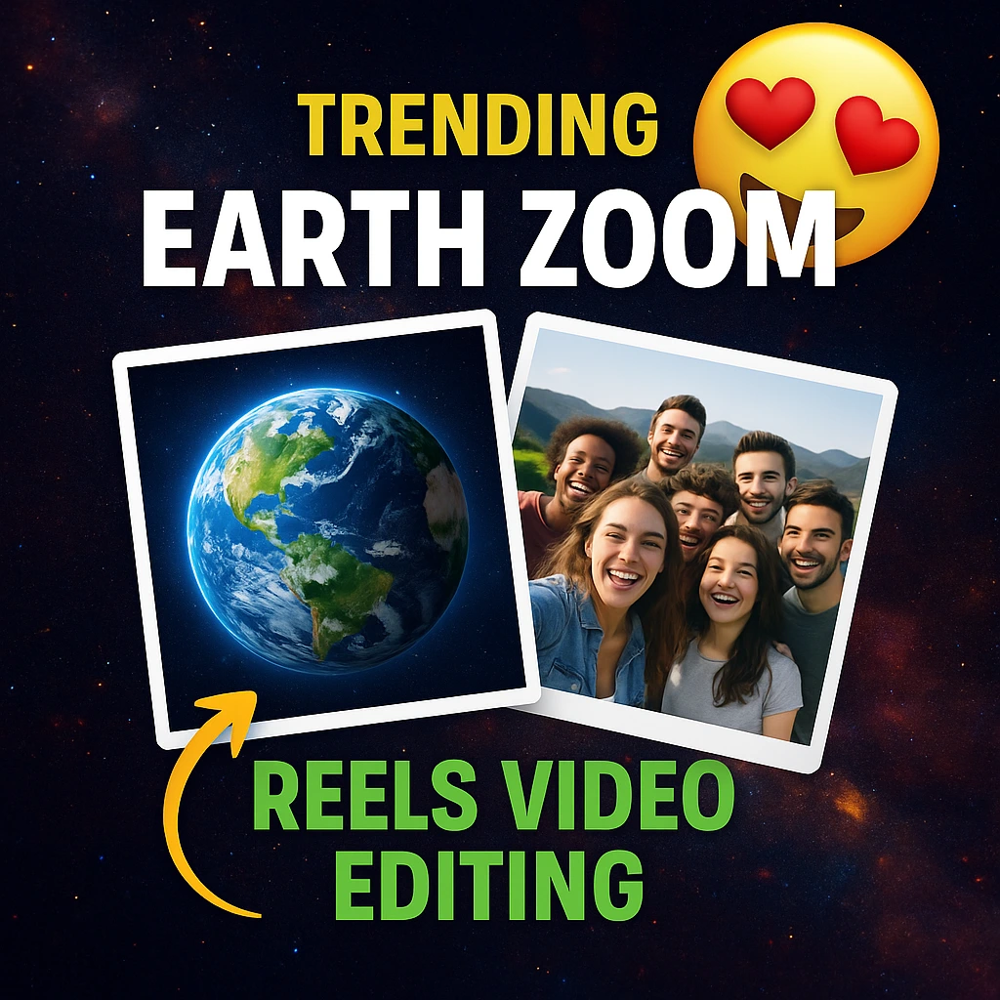

These days, a stunning trend is going viral on Instagram and YouTube—Earth Zoom Effect! In these videos, it appears as if the camera is zooming out from Earth and landing directly on a person or location. Previously, such videos were created using the Higgsfield AI website, but now that tool has become paid. But don’t worry—now you can make these videos completely free using VN Code and CapCut Template.
If you want to create Earth Zoom videos using Pixverse AI, we’ve already provided a step-by-step guide in a previous article. However, Pixverse sometimes compromises on video quality. So today, we’ll share a super easy and high-quality method—by using VN and CapCut tools.
How to Make an Earth Zoom Reels Video?
If you also want to create a trending Earth Zoom In AI Free or Earth Zoom Out AI Free video, you have two easy options:
1. Make Earth Zoom Video Using VN Code
- First, you’ll be given a QR Code. You can download it or take a screenshot and save it in your gallery.
- Now open the VN Editor App. Once the app opens, you’ll see a Scanner Icon on the top right corner.
- Click on that icon, then choose the Gallery option and select your saved QR Code.
- After scanning the code, a pre-made project will open where you can add your own photo or video clip.
- In just a few steps, your Earth Zoom VN Code video will be ready!

2. Make Earth Zoom Video Using CapCut Template:
- In this article, we’ll provide a CapCut Template Link that is perfect for creating Earth Zoom videos.
- Once you click the link, it will automatically open the CapCut App.
If it doesn’t open, don’t worry—just use a VPN, and everything will work smoothly. - After the app opens, simply add your video clip and click on “Create”.
- Within minutes, your video will be ready!
Use CapCut Template
(Here you’ll include the link or button so the user can directly open the template)
Conclusion:
Friends, in today’s article, we showed you how to create trending Earth Zoom In and Earth Zoom Out AI Free videos using VN Code and CapCut Template without spending a single rupee. This trick is currently viral across social media, and if you post your own Earth Zoom video, you too could get millions of views!
If you face any issues while creating the video, drop a comment below—we’ll do our best to solve your problem quickly!
🔥 Now it’s your turn—VN or CapCut, which method did you find easiest? Tell us in the comments and start trending on Insta with your Earth Zoom video!